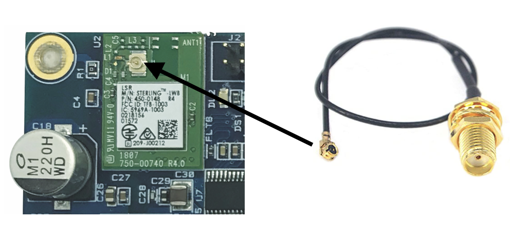

nXmicro+
Contents
nXmicro+#
Table of contents#
General#
CPU iMX6ULL Single Core ARM Cortex A7 800MHz
1024Mb Flash - 512Mb RAM
Wide 7 to 40 Vac/Vdc single power supply
2 x 10/100 Ethernet interface
1 x microSD
1 x USB Host,
1 x USB Device (Ethernet Gadget used for Codesys programer and SSH)
1 x RS485,
1 x RS232,
1 x CAN
1 Wifi Module (Optional)
1 Modem 3G/4G module (Optional)
LVDS for display connection (Optional)
FRAM 256Kbit
RTC with battery
RGB Led
Mini Size: 145 x 65 mm
Connection#
Power Supply#
nXmicro+ receives a typical input DC voltage from +7V to +40V ac/dc. Phoenix MC1.5/2-G-3.5 1844210 90°position sp.3.5mm male connector is used, linked as follows:
Pin Number |
Signal name |
Function |
Voltage min |
Voltage Typ |
|---|---|---|---|---|
1 |
+V |
Power supply positive |
7V |
12/24V |
2 |
GND |
Power supply negative |
In this table are showed the current consumption of nXmicro+ at +12V and +24V during standard working:
Current @ +12V |
Current @ +24V |
|
|---|---|---|
nXmicro+ board |
110mA |
60mA |
nXmicro+ board + Display 7” |
400mA |
210mA |
nXmicro+ board + Display 10.1” |
420mA |
215mA |
Micro SD Card#
Is used as external memory and support both of micro SD card standard and high capacity, from 32Mb to 32Gb.
RS232 Connection#
The RS232 is connected through a terminal male connector (Phoenix code MC1.5/3-G-3.5-1844223 90°or compliant).
RS232 port is recognized at the operating system level as ttymxc4 / COM5 interface
Pin number |
Signal Name |
Function Description |
Voltage reference |
|---|---|---|---|
1 |
TX |
Transmit Signal Output |
RS232 Standard |
2 |
RX |
Receive Signal Output |
RS232 Standard |
3 |
GND |
Power Signal |
- |
CAN Connection#
The CAN is connected through a terminal male connector (Phoenix code MC1.5/3-G-3.5-1844223 90°or compliant).
CAN port is recognized at the operating system level as can0 interface
Pin number |
Signal Name |
Function Description |
Voltage reference |
|---|---|---|---|
1 |
CAN H |
High level can bus line |
CAN Bus Standard |
2 |
CAN L |
Low level can bus line |
CAN Bus Standard |
3 |
GND |
Power Signal |
- |
RS485 Connection#
The RS485 is connected through a terminal male connector (Phoenix code MC1.5/3-G-3.5-1844223 90°or compliant).
RS485 port is recognized at the operating system level as ttymxc1 / COM2 interface
Pin number |
Signal Name |
Function Description |
Voltage reference |
|---|---|---|---|
1 |
RS485 + |
Not inverting Receiver In/Driver Out |
RS485 Standard |
2 |
RS485 - |
Inverting Receiver In/Driver Out |
RS485 Standard |
3 |
GND |
Power Signal |
- |
Ethernet Connection#
Both Eth0 and Eth1 use a RJ45 standard plug (8 wires)
Pin number |
Signal Name |
Function Description |
Voltage reference |
|---|---|---|---|
1 |
TX+ |
Trasmit Positive Signal |
Standard Ethernet |
2 |
TX- |
Trasmit Negative Signal |
Standard Ethernet |
3 |
RX+ |
Receive Positive Signal |
Standard Ethernet |
4 |
NC |
- |
Standard Ethernet |
5 |
NC |
- |
Standard Ethernet |
6 |
RX- |
Receive Negative Signal |
Standard Ethernet |
7 |
NC |
- |
Standard Ethernet |
8 |
NC |
- |
Standard Ethernet |
For applications which require fast and / or real time communication (EtherCAT) please connect the slave devices using eth0.
Default IP Settings on eth0#
IP Address: 192.168.1.100
Subnet Mask: 255.255.255.0
Gateway: 192.168.1.1
Default IP Settings on eth1#
IP Address: 192.168.2.100
Subnet Mask: 255.255.255.0
Gateway: 192.168.2.1
USB Host#
The Usb host is connected by standard type A USB connector. External memory on USB key format or license dongle key are accepted.
USB Otg#
The high-performance USB On-The-Go (up to 480Mbps) used only in device mode, compatible with the USB2.0 specification.
Thanks to the driver RNDIS Ethernet Gadget is possible use it as an p2p ethernet connection establishing a network link on device usb0.
Default IP Settings on usb0#
IP Address: 172.16.1.100
Subnet Mask: 255.248.0.0
Led#
Front led takes on a different color depending on the controller states. The table below shows the possible states of the controller and related signals.
Led color |
Meaning |
|---|---|
Blue |
Boot OS |
Orange |
CODESYS application in STOP or missing |
Green |
CODESYS application in RUN |
Red |
CODESYS application in EXEPTION |
Off |
No power supply |
WiFi + Bluetooth interface (Optional)#
nXmicro+ board is equipped with Sterling-LWB™2.4GHzWi-Fi® and Bluetooth® Smart Ready Multi-Standard Module. This module is based upon the Broadcom 4343W chipset, and supports IEEE802.11b/g/n, BT2.1+EDR, and BLE4.1 wireless connectivity. The module is equipped with Antenna I/F connector.

Mini PCI U.FL to SMA Female Connector Antenna WiFi Pigtail Cable IPX to SMA Extension is required
Modem 3G/4G/LTE (Optional)#
nXmicro+ is equipped with an (optional) embedded LTE or UMTS wireless communication module, supportsGSM/GPRS/EDGE and LTE or UMTS/HSDPA/HSUPA networks.
The module is equipped with Antenna I/F connector and Micro-SIM card I/F.
Mini PCI U.FL to SMA Female Connector Antenna WiFi Pigtail Cable IPX to SMA Extension is required.
Display (Optional)#
nXmicro+ is able to handle touch screen display of 7” and 10.1” thanks the LVDS connection.
Compatible display type and relative LVSD cable:
Display code |
Description |
LVDS Cable code |
|---|---|---|
YTC700TLAG-05-202C |
Display 7” PCAP 1024x600 |
520260.0030 revB |
YTCA10TLAA-09-300C |
Display 10.1” PCAP 1024x600 |
520260.0034 |
!Please follow the proper way cable connection, in order to avoid damage both on display or nXmicro+.